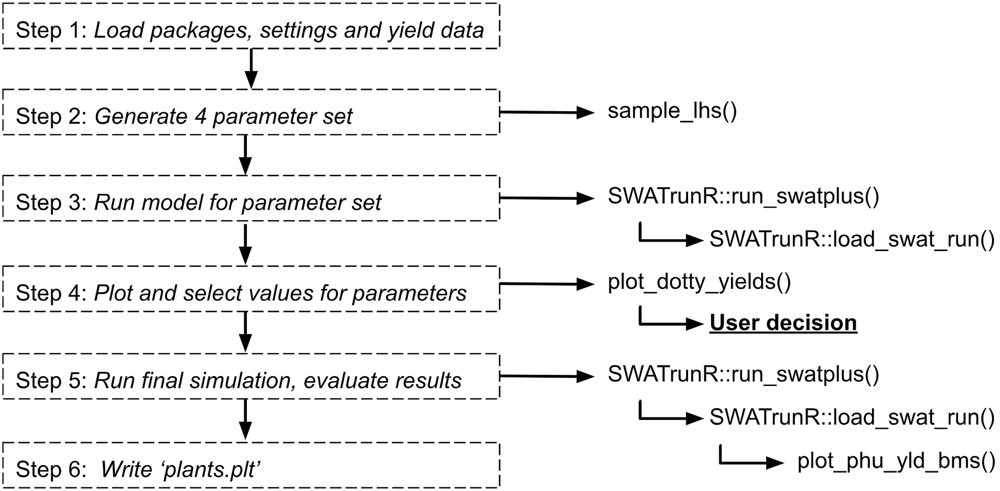
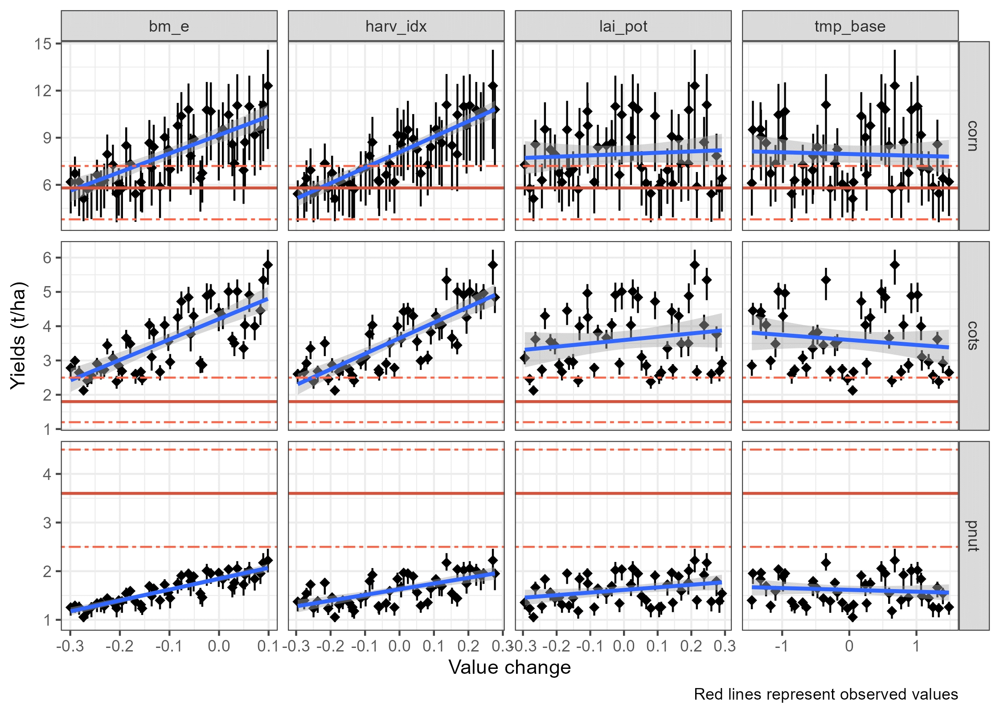
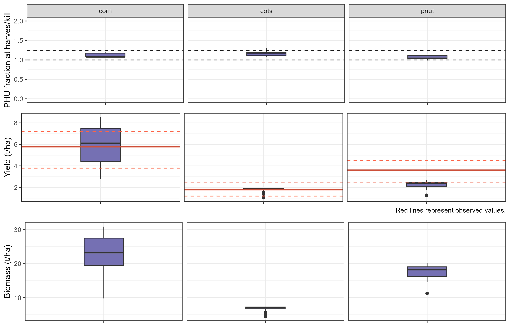

Crop Yields
Soft calibration workflow for crop yields in SWAT+ models
Source:vignettes/sc-yield.Rmd
sc-yield.RmdWorkflow
This workflow focuses on adjusting crop parameters to align simulated yields with observed data. The process is similar to the crop PHU ratio at harvest calibration, but here we fine-tune four additional parameters: leaf area index, harvest index, base temperature for plant growth, and biomass energy ratio.

1. Load packages, settings and yield data
This step is the same as in Crop PHU ratio at harvest.
2. Add additional parameters
In addition to days_mat, you can also adjust other
parameters such as leaf area index (lai_pot), harvest index
(harv_idx), base temperature for plant growth
(tmp_base), and biomass energy ratio (bm_e).
These parameters can be adjusted in a similar way as
days_mat by creating a parameter set with the
sample_lhs() function. When making these updates, it is
important to ensure that the resulting values remain realistic and
biologically meaningful—for example, avoiding negative values or ranges
that fall outside plausible agronomic limits.
par_bnd <- tibble('lai_pot.pdb | change = relchg' = c(-0.3, 0.3),
'harv_idx.pdb | change = relchg' = c(-0.3, 0.3),
'tmp_base.pdb | change = abschg' = c(-1.5, 1.5),
'bm_e.pdb | change = relchg' = c(-0.3, 0.1))
## The number of samples can be adjusted based on the available computational resources.
## Recommended number of samples is 50-100.
par_crop <- sample_lhs(par_bnd, n_combinations)
# Add updated days to maturity values to parameter set
par_crop <- bind_cols(par_crop, dmat_sel)3. Run model for additional parameter set
With all parameters defined, you can now run the SWAT+ model again
using the run_swatplus function. This will execute the
model simulations for each combination of parameters in
par_bnd, and the results will be stored in the
./simulation folder.
# Run the SWAT+ model with the additional parameter set
run_swatplus(project_path = model_path,
output = list(yld = define_output(file = 'mgtout',
variable = 'yld',
label = crop_names)),
parameter = par_crop,
start_date = NULL, # Change if necessary.
end_date = NULL, # Change if necessary.
years_skip = NULL, # Change if necessary.
n_thread = n_cores,
save_path = './simulation',
save_file = add_timestamp('sim_yld'),
return_output = FALSE,
time_out = 3600 # seconds, change if run-time differs
)4. Plot and select values for parameters
After running the model with the additional parameters, you can load
and visualize the results to assess the impact of the changes on crop
yields. The plot_dotty_yields() function is used to plot
the crop yields for each combination of parameters, allowing you to
select the best-performing parameter set based on yield performance.
# Load the most recent yield simulation results
yld_sims <- list.files('./simulation/', pattern = '[0-9]{12}_sim_yld')
yld_path <- paste0('./simulation/', yld_sims[length(yld_sims)])
yld_sim <- load_swat_run(yld_path, add_date = FALSE)
# Remove days to maturity parameter columns before plotting.
yld_sim$parameter$values <- yld_sim$parameter$values[, 1:4]
## Plot dotty figures for the selected crops
plot_dotty_yields(yld_sim, yield_obs)
Based on this figure user can select the best performing parameter
set for each crop. The selected values are saved in
crop_par_sel and will be used in the final run.
# Fix the parameter changes you want to apply to the crops
crop_par_sel <- tibble(
plant_name = c("corn", "cots", "pnut"),
'bm_e.pdb | change = relchg' = c( -0.2, -0.3, 0.1),
'harv_idx.pdb | change = relchg' = c( -0.15, -0.3, 0.3),
'lai_pot.pdb | change = relchg' = c( -0.2, -0.3, 0.3),
'tmp_base.pdb | change = abschg' = c( 1.5, 1.5, -1.0))
# Check if user defined days to maturity values for all crops.
stopifnot(all(crop_names %in% crop_par_sel$plant_name))
# Restructure the set parameter changes to SWATrunR
crop_par_sel <- prepare_plant_parameter(crop_par_sel)5. Run final simulation, evaluate results
In the final step, you can run the SWAT+ model with the selected
parameters using the run_swatplus function. This will
execute the model simulations for the final parameter set, and the
results will be stored in the ./simulation folder.
# Run the simulations
run_swatplus(project_path = model_path,
output = list(yld = define_output(file = 'mgtout',
variable = 'yld',
label = crop_names),
bms = define_output(file = 'mgtout',
variable = 'bioms',
label = crop_names),
phu = define_output(file = 'mgtout',
variable = 'phu',
label = crop_names)
),
parameter = par_final,
start_date = NULL, # Change if necessary.
end_date = NULL, # Change if necessary.
years_skip = NULL, # Change if necessary.
n_thread = n_cores,
save_path = './simulation',
save_file = add_timestamp('sim_check01'),
return_output = FALSE,
time_out = 3600, # seconds, change if run-time differs
keep_folder = TRUE
)The final simulation results can be evaluated using the
plot_phu_yld_bms() function. This plot will help assess
whether the changes made to the four parameters have significantly
affected crop yield, biomass, or PHU values. Ideally, these outputs
should remain consistent (in ranges for PHU and yields), as the main
issues related to days-to-maturity were already addressed in the first
part of the script.
# Load the most recent check simulation results
check_sims <- list.files('./simulation/', pattern = '[0-9]{12}_sim_check01')
check_path <- paste0('./simulation/', check_sims[length(check_sims)])
check_sim <- load_swat_run(check_path, add_date = FALSE)
# Plot PHU, crop yields and biomass for final simulation run.
plot_phu_yld_bms(check_sim, yield_obs, 0.3)
6. Write ‘plants.plt’
If the final simulation results look acceptable, you can save the
adjusted parameter table to the project folder by setting
overwrite = TRUE in the command below. This will replace
the original plants.plt file. A backup of the original file
is available at ./backup/plants.plt in case you need to
restore it.
Next steps
After calibrating crop yields, you can proceed with the soft calibration of the water yield ratio here.